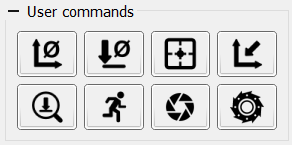

To extend program functionality for CNC control, a User commands panel is provided. Each button on the panel sends pre‑defined commands to the GRBL controller when pressed.
Command configuration occurs in the program’s Settings window. Within the User commands group, a table lists each command and allows you to:
The program includes a limited set of icons; additional user‑defined icons can be added by selecting ... item from the icon selection dropdown.
A command code may consist of a single or multiple G‑code lines, or script.
For a full discussion of using script within the program, see Scripting in this manual.